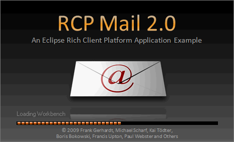
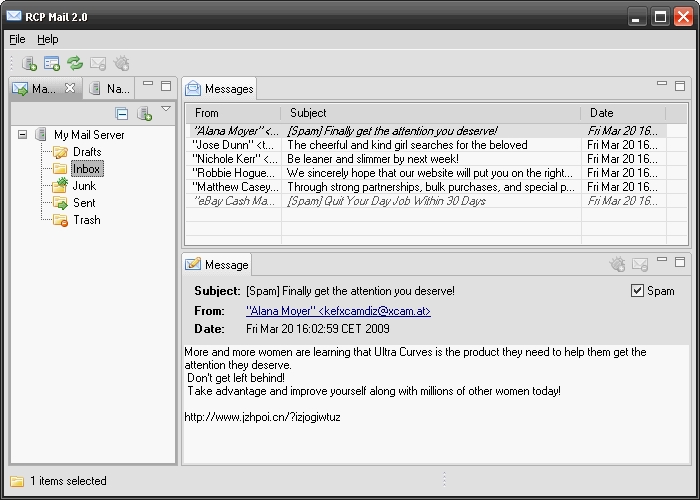
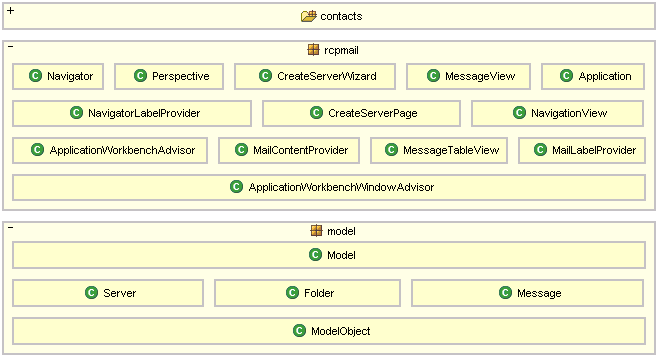
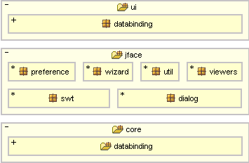
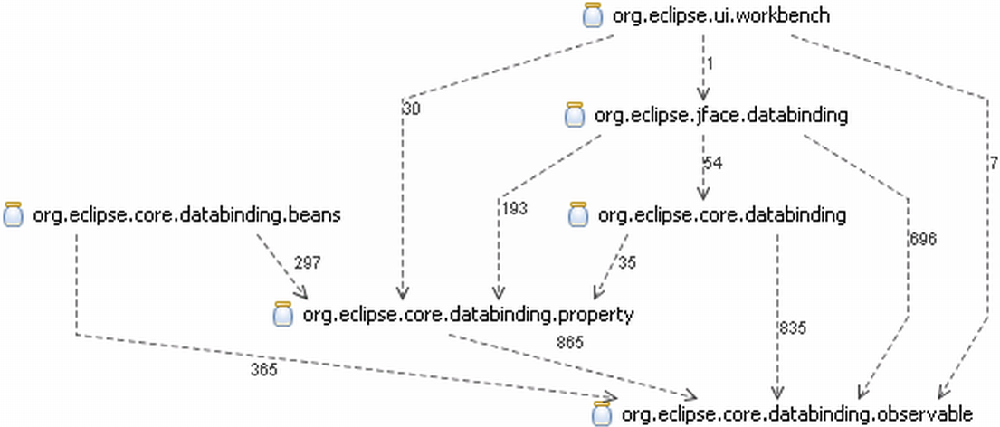
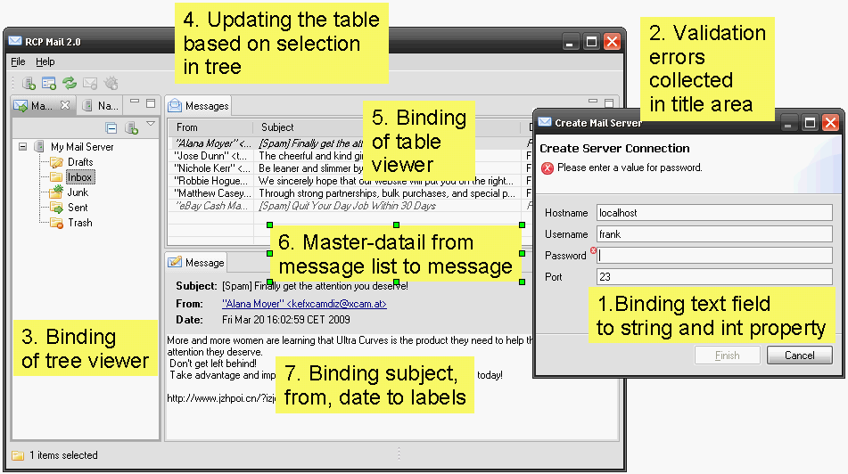
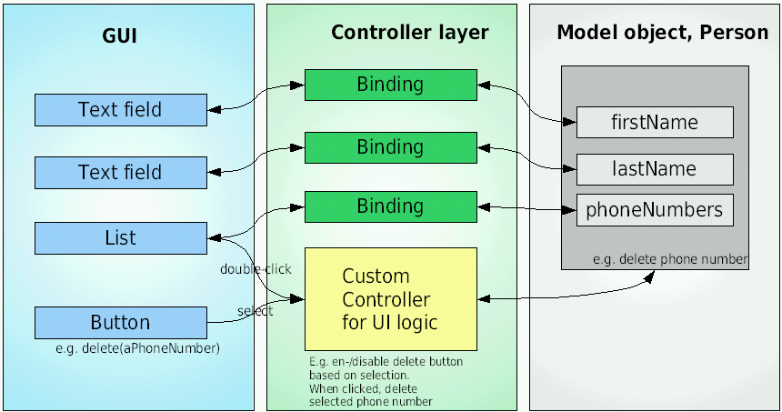
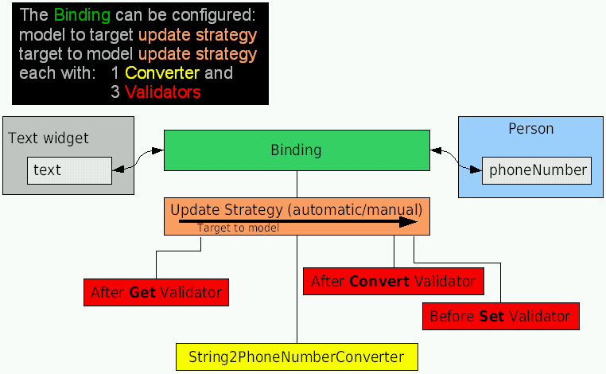
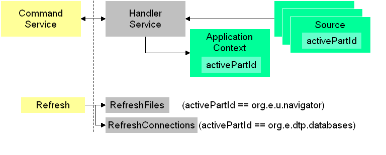
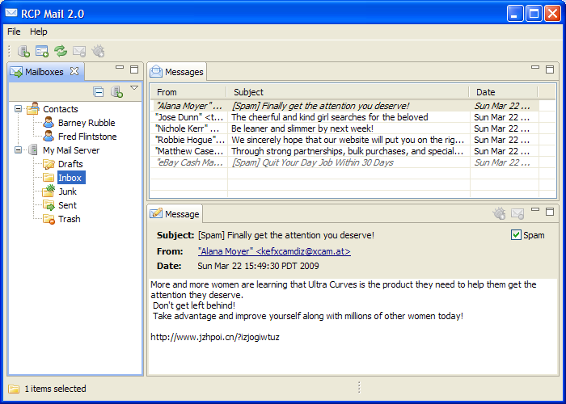

RCP Mail 2.0 -- Data Binding, Commands and Common Navigator Handout
Frank Gerhardt, Michael Scharf, Kai Tödter, Boris Bokowski, Francis Upton IV, Paul Webster

All rights reserved. Distributed under Creative Commons Attribution-Noncommercial-Share Alike 3.0 United States License

1 minute demo of the features


Databinding comes in three layers

We introduce data binding in four areas

At the end of the data binding tour will be an exercise where you will add your on binding to a text field in the wizard.
Optional: new column, or third level in tree.
Get rid of listeners in UI code!
Why?

The two main concepts, and layers are
Note: by convention UI always left, model always right, on diagrams and in the API, see e.g. DataBindingContext, ViewerSupport
In wizard: binding of text fields to int and string
DataBindingContext dbc = new DataBindingContext();
dbc.bindValue(SWTObservables.observeText(hostnameText, SWT.Modify),
BeansObservables.observeValue(server, "hostname"));

new UpdateValueStrategy().setBeforeSetValidator(new IValidator() {
public IStatus validate(Object value) {
String s = (String) value;
if (s.contains(" ")) {
return ValidationStatus.error("no spaces please");
}
return ValidationStatus.ok();
}
Goal: For each parent, one IObservableList representing children.
To create these lists lazily, we provide a factory returning lists.
public IObservable createObservable(Object parent) {
if (parent instanceof Model) {
return BeanProperties.list("servers").observe(parent);
}
if (parent instanceof Server) {
return BeanProperties.list("folders").observe(parent);
}
return null;
}
Our (invisible) root element is "Model".
BeanProperties.list("servers") is a factory for creating IObservableLists.
Second constructor argument is a "TreeStructureAdvisor".
Is consulted when finding an element in the tree that has not been materialized: notice "polish" when starting app.
Second purpose: optimize for elements without children.
<command categoryId="rcpmail.category"
description="Synchronize with Server"
name="Synchronize" id="rcpmail.syncServer" >
</command>
// CreateServerHandler.java
public Object execute(ExecutionEvent event) {
WizardDialog dialog = new WizardDialog(HandlerUtil
.getActiveWorkbenchWindow(event).getShell(),
new CreateServerWizard());
dialog.open();
return null;
}
The old version of this RCP app uses ActionFactory to generate Actions to be used in the main menu. In the new version, we'll use commands to create the main menu instead.
First, we'll replace the about action with the equivalent commands.
We will need to place the Open New Window command correctly when we replace the ActionFactory action.
// often in createPartControl(Composite) IHandlerService hs = (IHandlerService) getSite().getService( IHandlerService.class); markAsSpamHandler = new MarkViewAsSpamAndMoveHandler(this); hs.activateHandler(MarkAsSpamAndMoveHandler.MARK_AS_SPAM_COMMAND_ID, markAsSpamHandler);
Say we want the refresh command to refresh information in the active view:
The three most common handler contribution types are:
There are a couple of ways to contribute handlers at the different levels:
We want to introduce the Mark As Spam command. In the Message View, it should mark the message as spam and move it to the Junk folder. In the Message Table View, it should mark the one or more selected messages as spam and move them to the Junk folder.
If we provide the ability to delete messages it would work in a similar fashion. The message would be moved to the Trash folder.
org.eclipse.ui.ISources
<enabledWhen>
<with
variable="selection">
<iterate
ifEmpty="false"
operator="and">
<instanceof
value="rcpmail.model.Message">
</instanceof>
</iterate>
</with>
</enabledWhen>
The Sync With Server command should be enabled when a single folder is selected. This command is general to the RCP and so can easily be contributed in the plugin.xml.
<key
commandId="rcpmail.syncServer"
schemeId="rcpmail.key.scheme"
sequence="CTRL+T">
</key>
As with most applications, we want keybindings. There is a choice to make:
The RCP mail app will use its own scheme to control the keybindings. In this case, it is advisable to copy over the 5 standard keybindings: cut, copy, paste, select all, delete.
File/Exit and New Window commands
Adding Contacts

Determined at runtime based on expressions.
Collections are not related or even known to each other.
"Content" is content providers, label providers, sorters, filters, drag handler.
CommonNavigator - A ViewPart; the Project Explorer is an instance of the CommonNavigator.
CommonViewer - A Viewer.
Navigator Content Extensions - Declare wads of content that can be dynamically enabled.
These content extensions have user visible names and can be dynamically enabled/disabled in the view context menu.
Resource Content Extensions - A set of extensions in org.eclipse.ui.navigator.resources
that provide the content for resources.
Project Explorer - Main view of the workspace with other content built on resources.
Resource -> JDT, Resource -> CDT, Resource -> JDT -> WTP, etc.
Team Synchronization - Uses the CNF to provide the different types of views, an example of a new of the CNF on an alternate viewer.
RCP Apps that use Resources - Allows RCP model objects to be contributed.
Large RCP Apps - RCP apps that have many sets of content.
Step 12 - Add the CNF to the basic rcpmail application replacing the viewer.
Step 13 - Add the rcpmail.contacts plugin that with the contacts model objects and contact content/label providers.
Step 14 (Exercise) - Add the extension to the rcpmail.contacts plugin hooking it to the CNF.
Steps to change the TreeViewer to CNF:
private final String NAVIGATOR_ID = "rcpmail.NavigatorView";layout.addStandaloneView(NavigationView.ID, false, IPageLayout.LEFT, 0.25f, editorArea); to: layout.addStandaloneView(NAVIGATOR_ID, true, IPageLayout.LEFT, 0.25f, editorArea);
protected IAdaptable getInitialInput() {
Model.getInstance();
}
getElements() returns the Contacts header when it sees the Model object
public Object[] getElements(Object inputElement) {
if (inputElement == Model.getInstance()) {
return new Object[] { Contacts.getInstance() };
}
return null;
}
getParent() returns:
if (element instanceof Contact) return Contacts.getInstance(); if (element instanceof Contacts) return Model.getInstance(); }
Hooking rcpmail.contacts plugin to the CNF
Steps to add the navigator content extention to the rcpmail.contacts plugin
This presentation uses the Slideous package by Prof. Stefan Gössner, licensed under the GNU LGPL License 2.1.
This section lists all hyperlinks included in the presentation. When printing HTML, usually only the blue and underlined hyperlinks are shown and the targets of all hyperlinks are "lost". This handout, when printed (only!), includes a number like a footnote (e.g. [123]) after each hyperlink to refer to the following list of targets.